00:30
In a 2023 survey conducted by the Pew Research Center, 3,925 U.S. adults, out of the 10,329 randomly sampled, say they are very to somewhat likely to seriously consider an electric vehicle (EV) for their next vehicle purchase. We’ll consider these individuals “interested in an EV.”
The single value considered to be the “best guess” for the parameter of interest.
For example, if the parameter of interest is a population proportion, \(p\), the point estimate from a sample is the sample proportion, \(\hat{p}\).
In a 2023 survey conducted by the Pew Research Center, 3,925 U.S. adults, out of the 10,329 randomly sampled, say they are very to somewhat likely to seriously consider an electric vehicle (EV) for their next vehicle purchase. We’ll consider these individuals “interested in an EV.”
If we are interested in estimating the true proportion of all U.S. adults interested in an EV, what is the value of the point estimate based on this sample?
00:30
A point estimate is rarely exactly equal to the population parameter and has some sampling variability associated with it.
The Central Limit Theorem can help us understand this variability for \(\hat{p}\) and \(\overline{x}.\)
In a 2023 survey conducted by the Pew Research Center, 3,925 U.S. adults, out of the 10,329 randomly sampled, say they are very to somewhat likely to seriously consider an electric vehicle (EV) for their next vehicle purchase. We’ll consider these individuals “interested in an EV.”
\(\hat{p} = \frac{3925}{10329}\) is the sample proportion from just a single sample of 10,329 U.S. adults.
According to the Central Limit Theorem, what is the theoretical distribution of all possible \(\hat{p}\)’s?
00:45
A confidence interval considers the sampling variability of the point estimate to provide a range of plausible values for the parameter of interest.
Central Limit Theorem for \(\hat{p}\): For a sufficiently large sample, \[ \hat{p} \sim N\bigg(p, \sqrt{\frac{p(1-p)}{n}}\bigg)\]
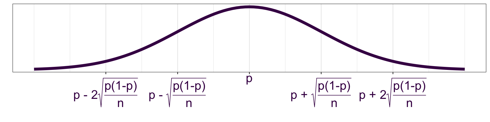
Recall that we can standardize any Normal random variable by subtracting its mean and dividing by its standard deviation: \[ \frac{\hat{p}-p}{\sqrt{\frac{p(1-p)}{n}}} \sim \]
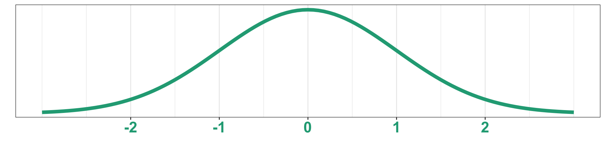
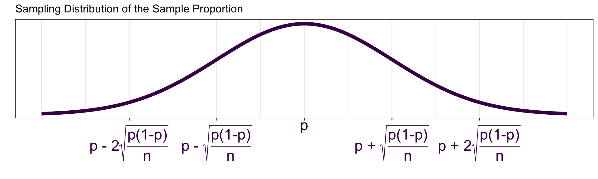
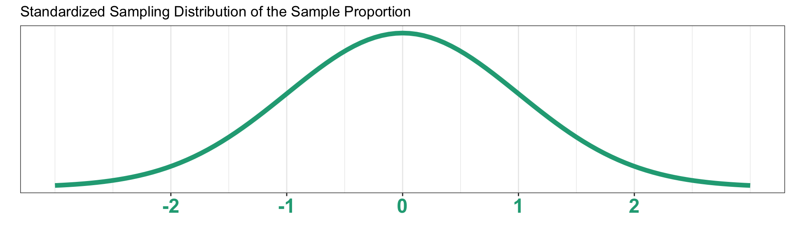
If the sampling distribution of \(\hat{p}\) is normal, then 95% of all possible point estimates will be within \(z^*\) standard errors of the population proportion \(p\).
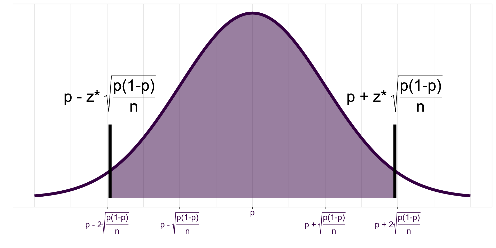
How can we determine the value of \(z^*\)?
Sampling Distribution of \(\hat{p}\)
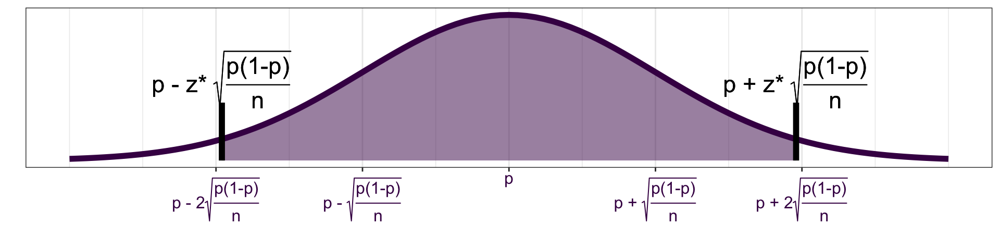
Standard Normal Distribution
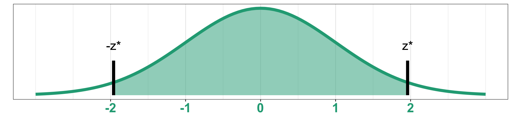
Standard Normal Distribution
The qnorm() function in R is the inverse of pnorm(). We can provide the area under the Normal distribution curve to the left of the value on the distribution that we’re looking for.
\(z^*=\) qnorm(0.975, mean = 0, sd = 1)\(= 1.96\)
If the sampling distribution of \(\hat{p}\) is normal, then 95% of all possible point estimates will be within 1.96 standard errors of the population proportion \(p\).
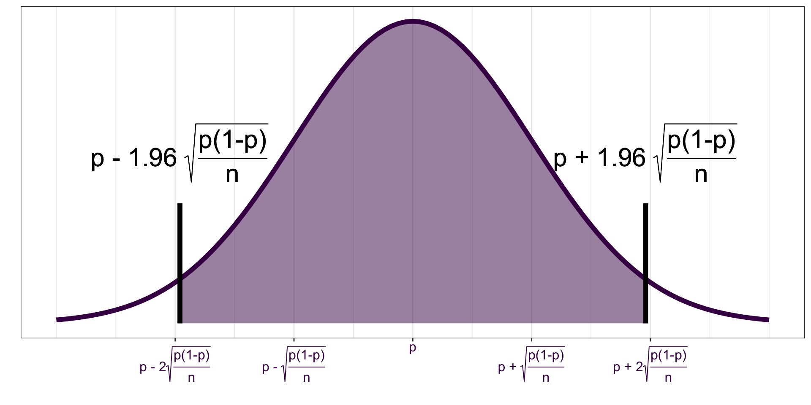
If a point estimate, \(\hat{p}\) within 1.96 standard errors of \(p\) is selected, then the interval
\[ \hat{p} \pm 1.96 \sqrt{\frac{p(1-p)}{n}}\]
will capture the parameter \(p\).
We can be 95% confident that the parameter is captured by the above interval estimate.
5% of these “95% confidence intervals” won’t capture \(p\). In practice, we don’t know \(p\) (remember the goal here is to estimate it), so we won’t know if the interval we constructed is one of the “good ones.”
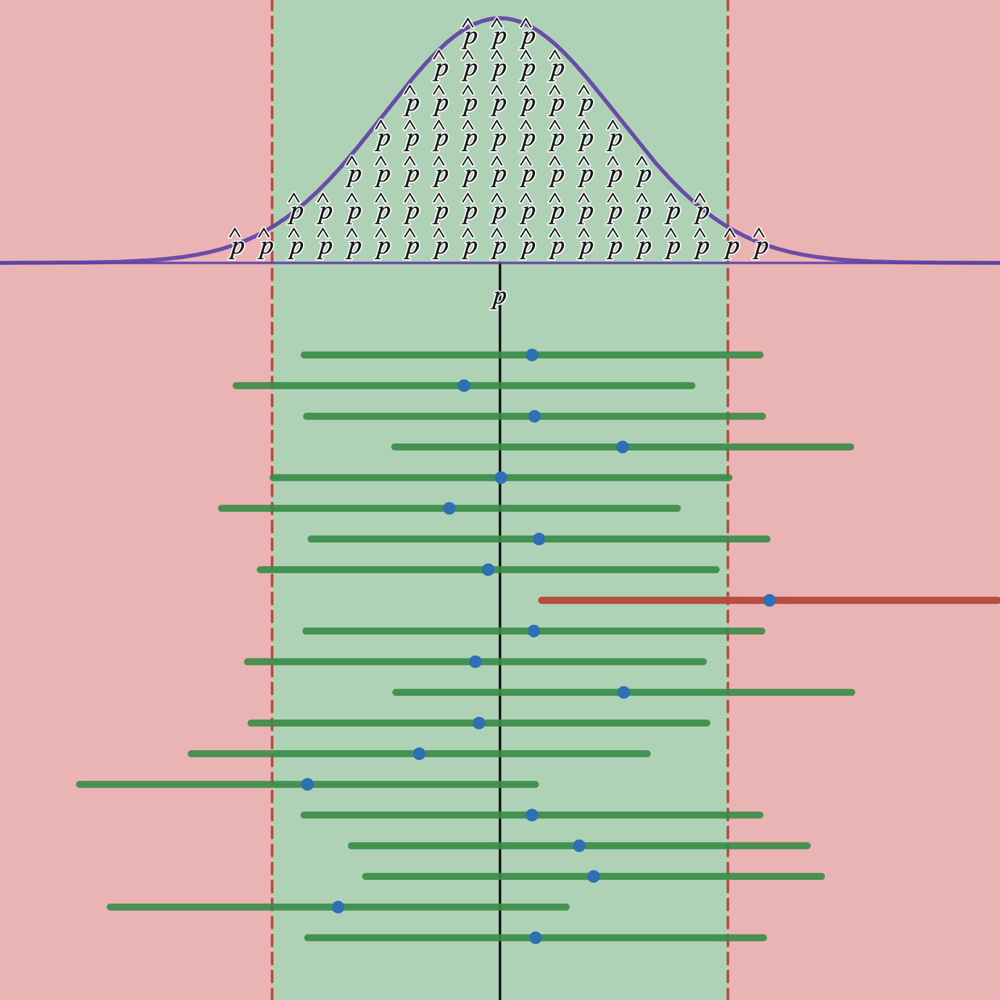
All confidence intervals have the same general form:
point estimate \(\pm\) critical value \(\times\) standard error of point estimate
critical value \(\times\) standard error of point estimate is often referred to as the margin of error
qnorm(\((CL + \frac{100-CL}{2})\times \frac{1}{100}\), mean = 0, sd = 1)
Recall that the construction of the confidence interval was based on the Central Limit Theorem for the sample proportion. The CLT requires that we have sufficiently large sample sizes, so we should only construct a confidence interval for \(p\) if
AND
In a 2023 survey conducted by the Pew Research Center, 3,925 U.S. adults, out of the 10,329 randomly sampled, say they are very to somewhat likely to seriously consider an electric vehicle (EV) for their next vehicle purchase. We’ll consider these individuals “interested in an EV.”
Complete the 4 steps needed to construct the 90% confidence interval for the population proportion of U.S. adults who are interested in an electric vehicle.
\(\hat{p} = \frac{3925}{10329}\)
CL = 90%, 100-CL = 10%
\(z^*=\) qnorm(0.95, 0, 1) \(=1.645\)
Standard error: \(\sqrt{\frac{\frac{3925}{10329}\bigg(1-\frac{3925}{10329}\bigg)}{10329}}\)
02:00
\[\hat{p} \pm z^* \sqrt{\frac{\hat{p}(1-\hat{p})}{n}}\]
In a 2023 survey conducted by the Pew Research Center, 3,925 U.S. adults, out of the 10,329 randomly sampled, say they are very to somewhat likely to seriously consider an electric vehicle (EV) for their next vehicle purchase. We’ll consider these individuals “interested in an EV.”
Construct a 90% confidence interval for the true proportion of U.S. adults interested in an EV.
\(\hat{p} = \frac{3925}{10329}\)
CL = 90%, 100-CL = 10%
\(z^*=\) qnorm(0.95, 0, 1) \(=1.645\)
Standard error: \(\sqrt{\frac{\frac{3925}{10329}\bigg(1-\frac{3925}{10329}\bigg)}{10329}}\)
\[\frac{3925}{10329} \pm 1.645\sqrt{\frac{\frac{3925}{10329}(1-\frac{3925}{10329})}{10329}} = (0.372, 0.388)\]
01:00
Template: We are ______% confident that the population _____________ of ____________________ is between __________ and __________, with a point estimate of __________.
Interpretation is always about the population parameter.
The confidence interval should not be interpreted as the probability of observing the parameter.
The confidence interval does not provide an interpretation corresponding to a single observation or single point estimate.
The confidence interval simply provides a range of plausible values for the parameter.
In a 2023 survey conducted by the Pew Research Center, 3,925 U.S. adults, out of the 10,329 randomly sampled, say they are very to somewhat likely to seriously consider an electric vehicle (EV) for their next vehicle purchase. We’ll consider these individuals “interested in an EV.”
Construct a 90% confidence interval for the true proportion of U.S. adults interested in an EV. Interpret the 90% confidence interval in the context of the problem
Answer the question at
PollEv.com/erinhowardstats
In a 2023 survey conducted by the Pew Research Center, 3,925 U.S. adults, out of the 10,329 randomly sampled, say they are very to somewhat likely to seriously consider an electric vehicle (EV) for their next vehicle purchase. We’ll consider these individuals “interested in an EV.”
Construct a 90% confidence interval for the true proportion of U.S. adults interested in an EV. Interpret the 90% confidence interval in the context of the problem
\(\hat{p} = \frac{3925}{10329}\)
CL = 90%, 100-CL = 10%
\(z^*=\) qnorm(0.95, 0, 1) \(=1.645\)
Standard error: \(\sqrt{\frac{\frac{3925}{10329}\bigg(1-\frac{3925}{10329}\bigg)}{10329}}\)
\[\frac{3925}{10329} \pm 1.645\sqrt{\frac{\frac{3925}{10329}(1-\frac{3925}{10329})}{10329}} = (0.372, 0.388)\]]
Interpretation:
We are 90% confident that the population proportion of U.S. adults interested in an EV is between 0.372 and 0.388, with a point estimate of 0.38.
The confidence level is chosen based on whether precision or accuracy is more desirable.
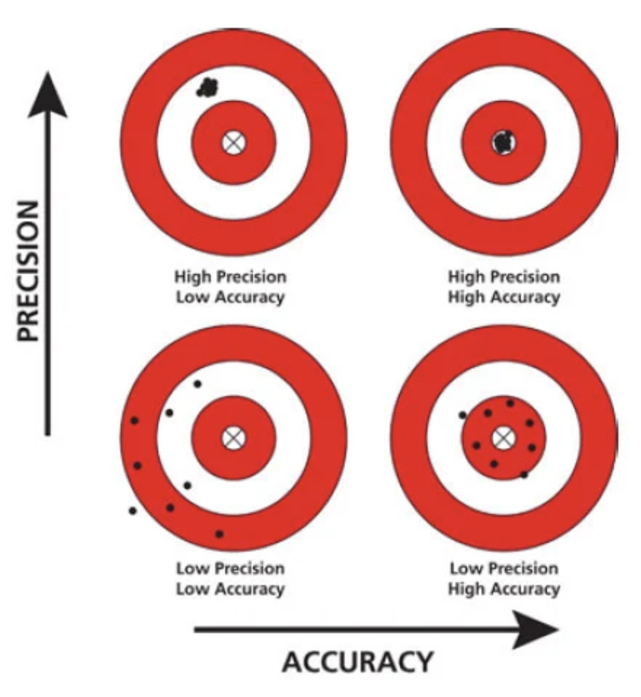As we increase the confidence level, we lose precision but gain accuracy.
Question of interest: What is the average mile time for all racers in the 10 Mile event in the 2017 Cherry Blossom Run?
Parameter of interest: \(\mu\), the average mile time for all racers in the 10-mile event
\(\overline{x} = 591.53\) seconds, \(s=105.66\) seconds
\(\overline{x}\) is the point estimate for the average mile time for all runners in the 10 Mile event.
The point estimate, \(\overline{x} = 591.53\) seconds is our best guess for the population mean, \(\mu\); however, since this estimate came from a subset of the population, we need to address the possible error or uncertainty in this estimate.
To do this, we need to identify the sampling distribution of \(\overline{x}\).
The sample size is sufficiently large (\(n=45\)), so according to the central limit theorem, what is the sampling distribution of the sample mean, \(\overline{x}\)?
\(\overline{x} \sim N\)\(\bigg(\)\(\mu\),\(\frac{\sigma}{\sqrt{n}}\)\(\bigg)\)
\(\overline{x} \sim N\bigg(\mu, \frac{\sigma}{\sqrt{n}}\bigg)\)
\(z = \frac{\overline{x} - \mu}{\sigma/\sqrt{n}} \sim\)\(N(0,1)\)
A t distribution is symmetric and centered at 0.
A t distribution is defined by its degrees of freedom.
The degrees of freedom determine the spread of the distribution.
As the degrees of freedom of increase toward \(\infty\), the t distribution approaches the Standard Normal distribution.
Degrees of freedom are determined by the sample size and number of unknown parameters.
For sufficiently large \(n\), the distribution of the standardized sample mean, \(\frac{\overline{x}-\mu}{s/\sqrt{n}}\) follows a t distribution with \(n-1\) degrees of freedom.
\[\frac{\overline{x}-\mu}{\frac{s}{\sqrt{n}}} \sim t_{n-1} \]
Recall that the construction of the confidence interval was based on the Central Limit Theorem for the sample mean. The CLT requires that we have sufficiently large sample sizes.
Use the sample size and observe the shape of the sampled distribution to determine if the sample size is sufficiently large:
If \(n\geq 30\), we can typically assume the sampling distribution of \(\overline{x}\) is approximately Normal and the CLT applies.
If \(n < 30\), we need to look at the sampled distribution. If there are no clear outliers or strong skewness in the sampled data, we can assume the sampling distribution of \(\overline{x}\) is approximately Normal and the CLT applies.
A confidence interval for \(\mu\) should be constructed when we want to estimate the population mean \(\mu\) based on an observed sample of \(n\) observations.
Constructing a Confidence Interval for \(\mu\)
Calculate the point estimate, \(\overline{x}\), from the observed sample.
Identify the confidence level, \(CL\), and the error associated with this confidence level \(100-CL\).
Determine the critical value, \(t^*\), by finding the \(CL + \frac{100-CL}{2}\) percentile on the t distribution with \(n-1\) degrees of freedom:
qt(\((CL + \frac{100-CL}{2})\times \frac{1}{100}\), n-1)
Confidence Interval Construction for \(\mu\)
\[\overline{x}\pm t^* \bigg( \frac{s}{\sqrt{n}}\bigg)\]
qt()
qt(p, df) calculates the value on a t distribution curve with df degrees of freedom that has an area of p to the left of it.
Example: To find the critical value needed to construct a 90% confidence interval for the mean when \(n=85\), run the following R code:
qt(0.95, 84)
Using the sampled data, construct a 95% confidence interval for the average mile time for all runners in the 10 Mile event at the 2017 Cherry Blossom Run.
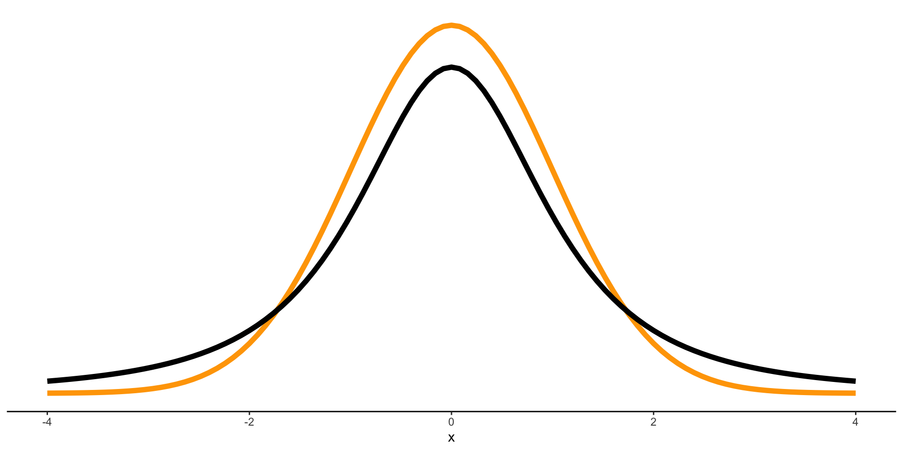\(\overline{x} = 591.53\) seconds
\(s = 105.66\) seconds
\(n = 45\)
Using the sampled data, construct a 95% confidence interval for the average mile time for all runners in the 10 Mile event at the 2017 Cherry Blossom Run.
\(\overline{x} = 591.53\) seconds
\(s = 105.66\) seconds
\(n = 45\)
Point estimate: 591.53
Confidence level: 95%
Critical value \(t^*\)=qt(0.975, 44)=2.015
Standard error: \(105.66/\sqrt{45}\)
Confidence Interval: \[591.53 \pm 2.015 \bigg(\frac{105.66}{\sqrt{45}}\bigg) = (559.79, 623.27)\]
Interpretation:
We are 95% confident that the average mile time for all runners in the 10 Mile event at the 2017 Cherry Blossom Run was between 559.79 seconds and 623.27 seconds with a point estimate of 591.53 seconds.
A random sample of 24 possums in Australia and New Guinea was collected. The length of each sampled possum’s head was measured in millimeters. The sampled distribution and sample statistics of the head lengths is shown below.
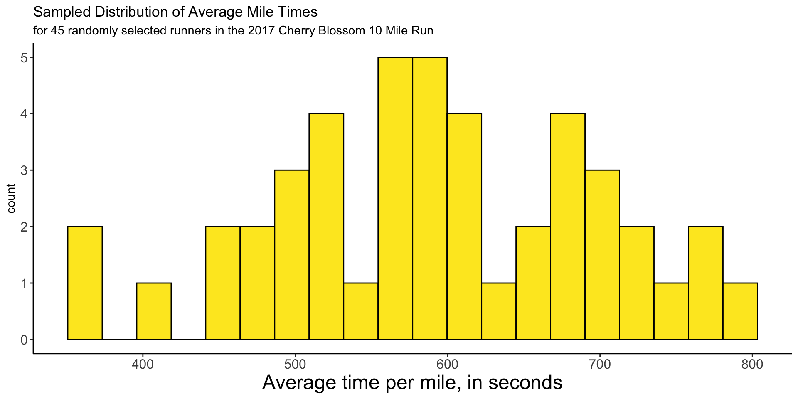
\(\overline{x} = 93.175\) mm \(s = 1.808\) mm
Use the sampled data to construct a 99% confidence interval for the true average head length of all possums in Australia and New Guinea. Don’t forget to check the sample size conditions before constructing the interval.
Check sample size condition! The sample size is less than 30; however, the sampled distribution does not suggest any skewness or outliers, so we can still construct confidence interval with the smaller sample size.
Point estimate: 93.175
Confidence level: 99%
Critical value \(t^*\)=qt(0.995, 23)=2.807
Standard error: \(1.808/\sqrt{24}\)
Confidence Interval: \[93.175 \pm 2.807 \bigg(\frac{1.808}{\sqrt{24}}\bigg) = (92.139, 94.211)\]
Interpretation:
We are 99% confident that the average head length of all possums in Australia and New Guinea is between 92.139 mm and 94.211 mm with a point estimate of 93.175 mm.
The Practice with Confidence Intervals for a Mean is an optional activity in Canvas, I highly recommend completing before the midterm to assess understanding of this material!